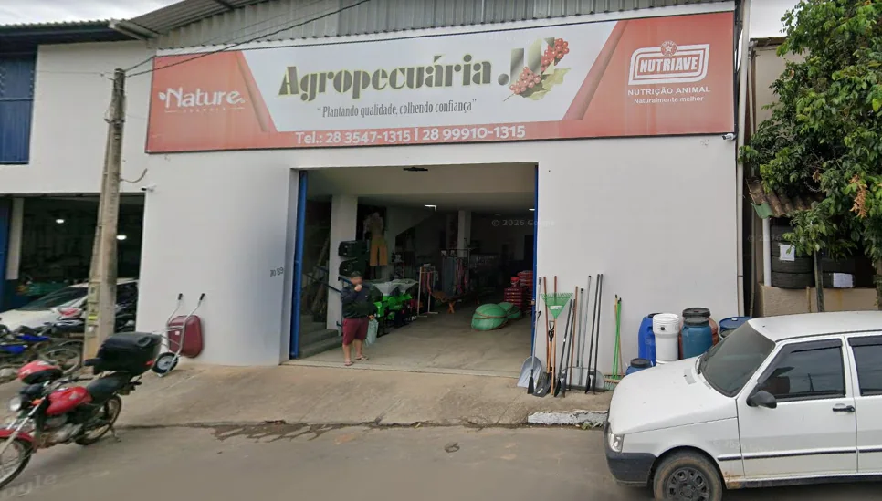
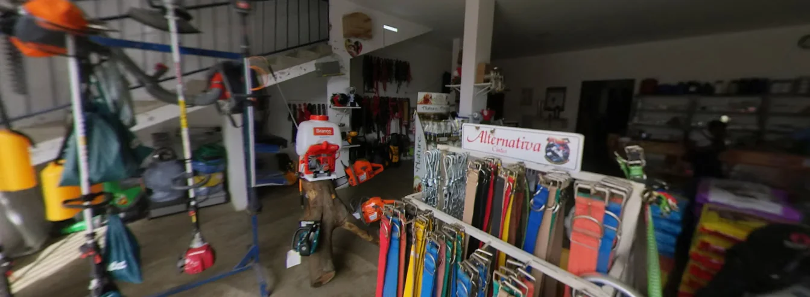

Onde estamosConceição do Castelo · ES
Agropecuária JC
Uma loja local conectada à rotina do campo.
Em Conceição do Castelo, a Agropecuária JC recebe produtores, famílias e clientes que buscam soluções práticas para o dia a dia rural.

Nossa proposta
Plantando qualidade e colhendo confiança.
Esse é o compromisso que orienta a presença da Agropecuária JC: estar por perto, ouvir o cliente e facilitar a busca por soluções para a rotina rural.
O contato pode começar no balcão, pelo telefone ou pelo WhatsApp. O mais importante é entender o que você procura e tornar o atendimento simples, objetivo e próximo.
AtendimentoSeg–Sex · 07:00–17:30
Presença local13 avaliações no Google
Jeito de atender
O que queremos que você perceba em cada contato.
Uma experiência de compra local, sem distância entre a dúvida do cliente e a orientação de quem está atendendo.
Proximidade
Atendimento acessível para entender o que você precisa.
Praticidade
Contato rápido por WhatsApp e loja física em Conceição do Castelo.
Confiança
Uma relação construída pela experiência de quem compra e recomenda.

Fale com a gente